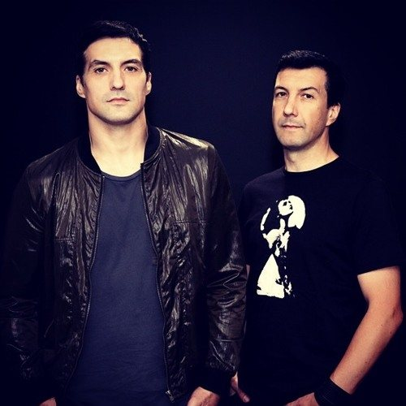
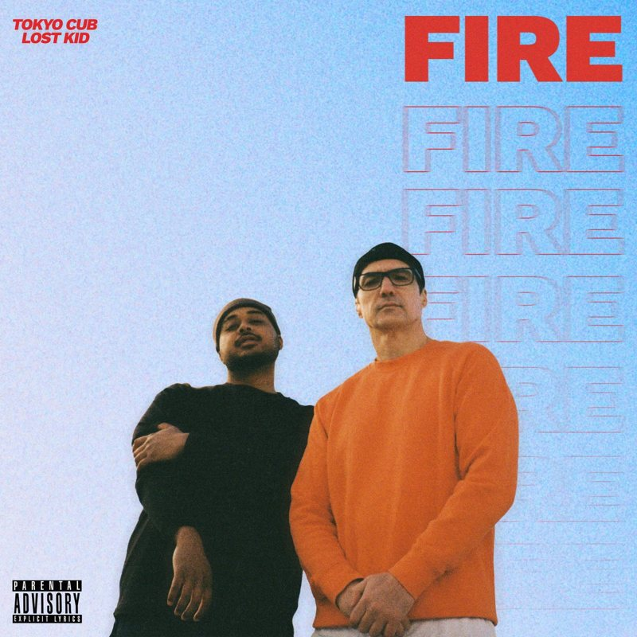

Naarm / Melbourne · Producer
TOKYO CUB
Atmospheric sound design over heavy rhythmic foundations — alt hip hop, electronica and dark pop, cut with a single clean stroke.
Press play
MUNCHIES
一Sound
The Catalogue
Full discography, every collaboration and the newest drops live on Spotify.
Follow Tokyo Cub on Spotify二Vision
Moving Pictures
三The Way
Toni Lozanovski
Tokyo Cub is the solo project of producer Toni Lozanovski — shaping a distinct space within Australia’s evolving alt hip hop and dark-pop landscape.
His work pairs atmospheric sound design with heavy rhythmic foundations, blending hip hop, electronica and experimental pop into something both contemporary and boldly his own. The tracks draw on personal experience and the wider cultural currents around it — built in the studio, but made for bodies in a room.
Before Tokyo Cub, Toni spent years behind the decks and on the dancefloor — first as Drive, then as one half of The Noise alongside his brother Vas. That club instinct never left: listen for the low end.
“This one is going to be soundtracking my summer for sure… Love the adlibs and the attitude. The mix is so tight on this one!”
Alex Warren on FIRE — triple j Unearthed review
The dojo and the desk
A lifelong martial artist, Toni carries the codes of the samurai and the art of Japanese tattooing into everything he makes. The discipline is the same on the mat as at the mixing desk: endless repetition, patience, and then the single decisive cut.
Sounds in the orbit of
Collaborators
- Lost Kid
- Oliver Silo
- Feelds
- WE LOST TOKYO
- LIFEOFTI
- Laura Carville
四Teaching
Sensei
Audio Lecturer · JMC Academy
The craft is only half-learned until it is passed on. As an Audio Lecturer at JMC Academy, Toni guides the next generation of engineers and producers — the same way the old masters taught: by doing, then by showing.
-
Kihon Fundamentals
Gain staging, signal flow, critical listening. The basics, drilled until they disappear into instinct.
-
Keiko Practice
Session after session in the room. Real projects, real deadlines, real ears — skill earned through repetition.
-
Zanshin Awareness
Staying present after the last note. Knowing when a mix is finished — and when to put the sword down.
五Lineage
Names Worn Before
-
Origins
DRIVE
Where it started. Performing and collaborating as Drive — the first chapter on the road from the club to the studio.
-
2009 —
THE NOISE
A Melbourne DJ and production duo of brothers — Toni (ToneE) and Vas One. The mission: solid dancefloor fillers, built on signature driving basslines.

-
2024 —
TOKYO CUB
Debut single FIRE with Lost Kid lands in October 2024. Since then: the HTD sessions, a run of records with Oliver Silo, WASTED TIME with Feelds and MUNCHIES with Lost Kid and WE LOST TOKYO.

六Connect
Follow the Sound
Bookings, collaborations & enquiries — message @tokyocub on Instagram.